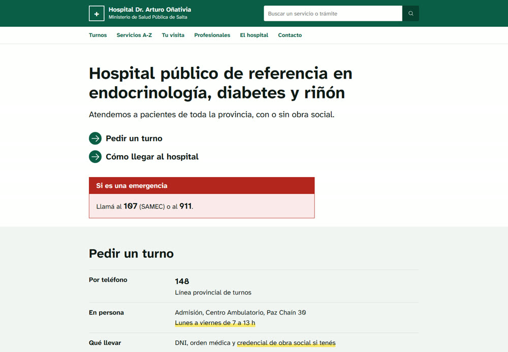
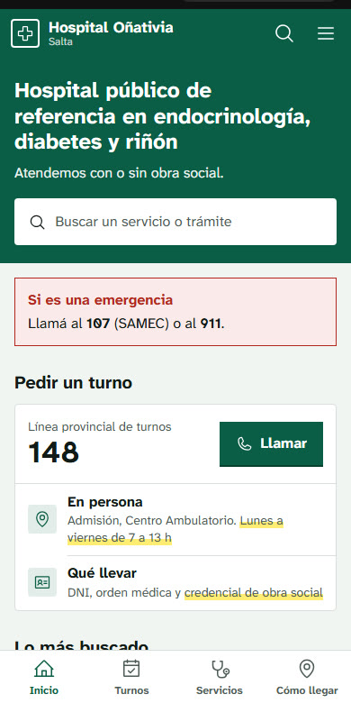

Propuesta AGuía de atención
Basada en NHS.UK y el sistema de diseño de GOV.UK. Prioriza resolver trámites rápido y la accesibilidad.
- Patrones
- Buscador en el encabezado con sugerencias, enlaces de acción, servicios de la A a la Z, pasos numerados y "¿Esta página te fue útil?".
- Fuerte en
- Adultos mayores y baja visión. Es la más clara y la más fácil de mantener.
- Débil en
- Imagen institucional. Se ve sobria y casi sin fotos.